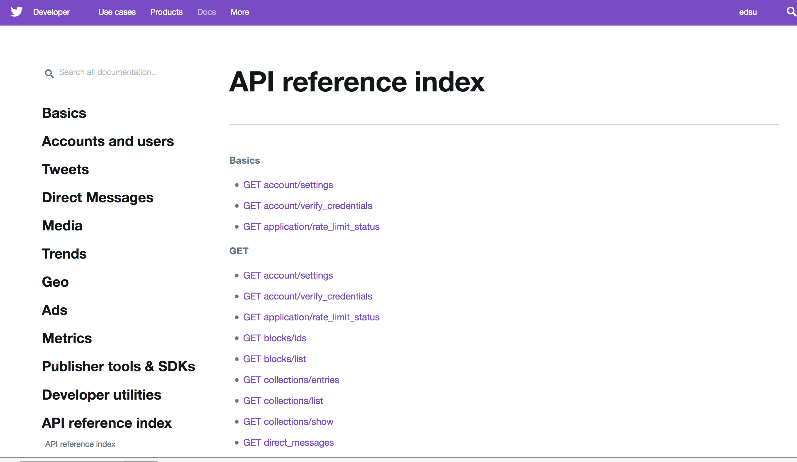

Social Media APIs
Mike MacKenzie
Application
Hi Twitter, tell me about Barack Obama?
What tweets are using the hashtag #blacklivesmatter?

Application
Programming
Interface
Call & Reponse
https://api.twitter.com/1.1/users/lookup.json/screen_name=barackobama
| Name: | Barack Obama |
| Location: | Washington, D.C. |
| Description: | Dad, husband, President, citizen. |
| Homepage: | https://www.obama.org/ |
| Followers: | 101,201,768 |
| Created: | March 5, 2007 |
| Picture: |  |
- Tweet ID
- Username
- Name
- Text
- Time
- Retweeted By
- Number of Retweets
- Hashtags
- Mentions
- Location
- URL
- Number of Tweets
- Number of Followers
- Avatar Image
- Embedded Photo/Video
- Reply To
- Verified
- Language
- Place
https://api.twitter.com/1.1/search/tweets.json?q=blacklivesmatter
access-token
14333328-Jy2zf50dsB9l93klsmkcmZKGgWDzL93k3k3l39FVB
access-token-secret
HPlkjs3lkj3lkjnskpw9494k4jmlk4992923jj3j393j
Discussion
- How do APIs effect research questions?
- What ethical questions do APIs raise?
- How might you use APIs in your research?